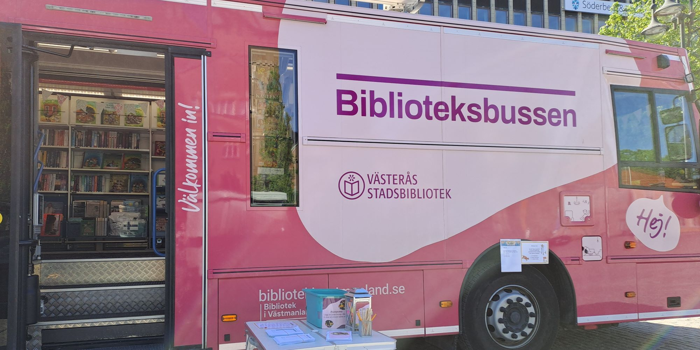
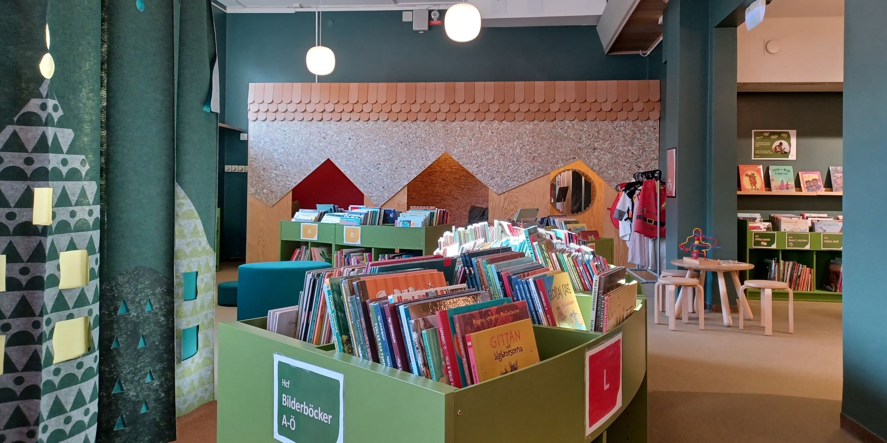
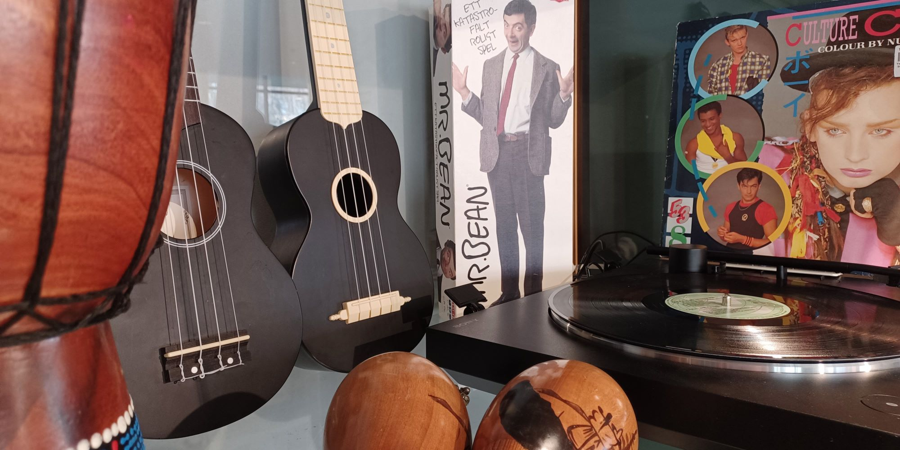
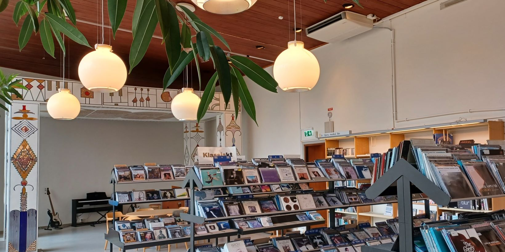
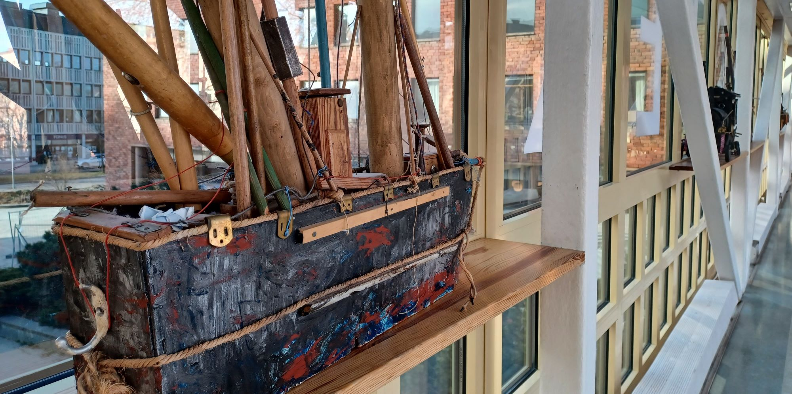
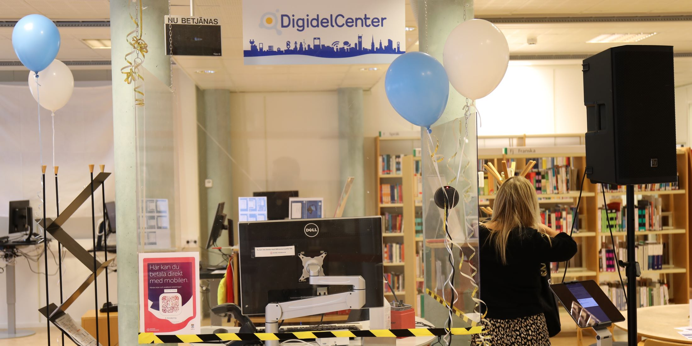

Välj ett uppdrag
Alla uppdrag utom biblioteksbussen hittar du inne på huvudbiblioteket.
Biblioteksbussen - Stora torget

Huvudentrén barnavdelningen

Kulturbanken

Musikavdelningen

Gångbron och över till fackbiblioteket

DigiDelCenter

Till startsidan